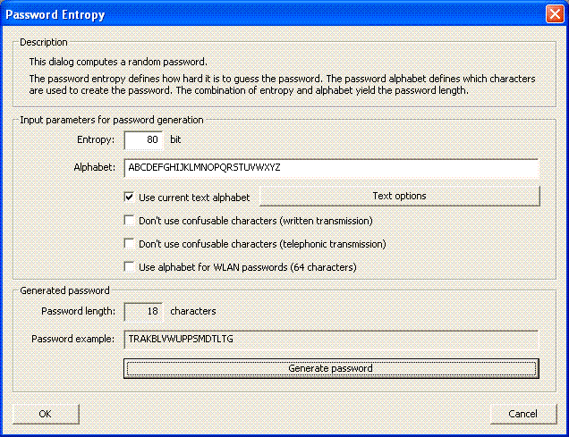

You can reach this dialog using the menu entry Individual Procedures \ Tools \ Password Entropy.

With this dialog you can generate passwords with a specific entropy. A reasonable application of this dialog reads as follows:
As of today, a randomly chosen key for modern symmetric encryption methods with an entropy of more than 80 bit is considered secure [1]. Thus, if you want to generate a random password of equivalent security, you have to choose a certain password alphabet and to adjust a password entropy of 80 or more bits.
You can use a pseudorandom generator to generate random passwords. But it is better to access additional sources of randomness - for example mouse movement or keyboard input. However, in this dialog just a standard library function is used as the pseudorandom generator.
For comprehensive information on passwords click here, information regarding password quality can be found here.
In order to generate a random password, you have to enter a password entropy and a password alphabet in the upper section of the dialog.
With the button Generate password you can generate a random password.
Besides setting the alphabet manually, you can select the following two alphabets: The current text alphabet or the alphabet for WLAN passwords. The two check boxes can be used to further restrict the alphabet.
If the check box Use current text alphabet is checked, the current CrypTool alphabet is used. You can alter the CrypTool alphabet by clicking the button Text options. Please note that the button is only active if the respective check box is checked.
Each of the two check boxes Don't use confusable characters [...] supply a static alphabet, whereas the risk of confusing characters during transmission is as slim as possible: The first alphabet is specially suited for written transmission ("abcdefghijkmnopqrstuvwxyzABCDEFGHJKLMNPRSTUVWXYZ23456789"), whereas the second alphabet is specially suited for telephonic transmission ("ABCDEFGHIJKLMNOPQRSTUVWXYZ234567").
Both alphabets minimize the risk to confuse certain characters (in the first case you might confuse a "1" with an "l", in the second case you might confuse an "a" with an "A").
The check box Use alphabet for WLAN passwords (68 characters) leads to a static alphabet as well. The limited alphabet does not have a special meaning. Though it is stated at [2] that the alphabet avoids characters that could possibly cause problems in (Unix) shells, if anything, the alphabet is there for convenience (i.e. on the command line one could quote to also use other characters). There might be other reasons to limit the alphabet for WLAN passwords: It is, if at all, barely possible to display exotic characters on WLAN-compatible devices like internet radios, games consoles or iPods.
The button Measure password quality opens the dialog Password Quality Meter to measure the quality of the generated password.
[1] Florian Marchal, Analyse und Weiterentwicklung von Werkzeugen zur Qualitätsmessung von Passwörtern (Analysis and Enhancements of Tools for Measuring the Quality of Passwords), 2005.
http://www.marchal.de/thesisBACHELOR.pdf
[2] Website providing a password generator (available in German only).
http://www.goebel-consult.de/service/passwort-generator